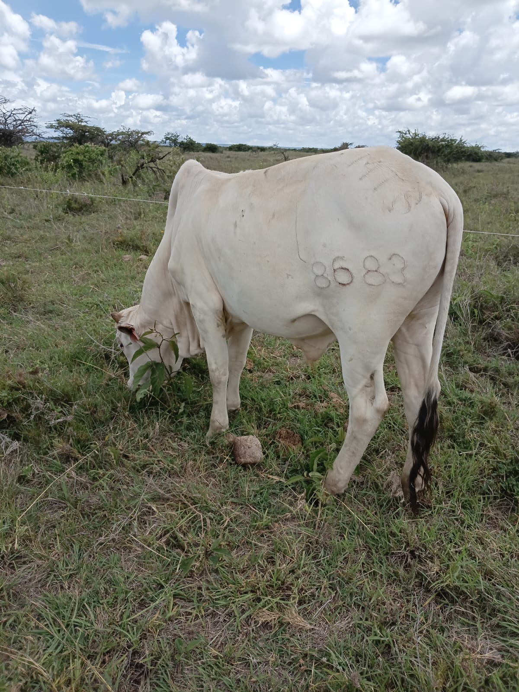
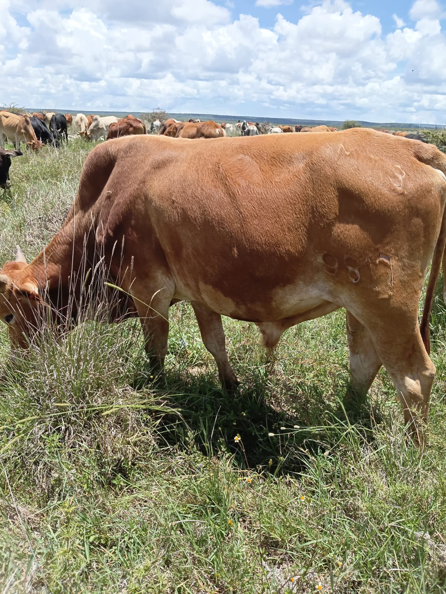
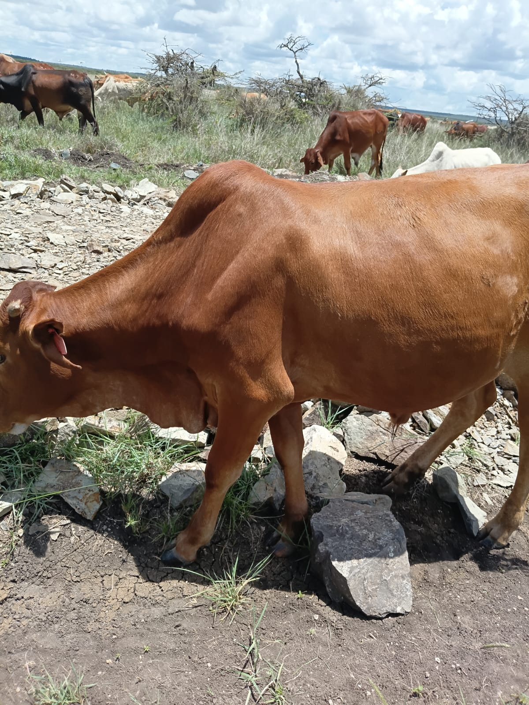
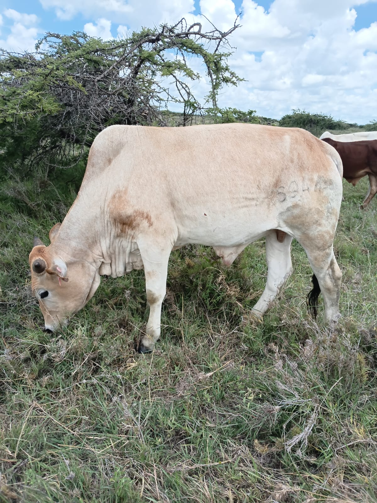

Socio-Economic and Sustainable Development Impact
Sorolen Enterprises Limited is transforming livestock trade into a transparent, market-driven, and climate-resilient value chain that improves livelihoods, strengthens pastoral economies, and promotes sustainable development across Kenya's ASAL regions.
1. Economic Impact
Increased Household Income: Through live-weight pricing and structured livestock markets, pastoralists receive fair and transparent prices for their animals.
Reduced Distress Sales: Farmers are protected from exploitative broker-driven pricing, particularly during drought periods when livestock prices traditionally collapse.
Employment Creation: The company creates opportunities for livestock traders, aggregators, transporters, herders, veterinary professionals, meat processors, and logistics providers.
Improved Market Access: Pastoralists gain access to domestic and export markets, increasing demand and commercial value for their livestock.
Value Addition: Livestock fattening, commercial off-taking, live animal trading, and meat export increase the value generated throughout the livestock value chain.
2. Social Impact
Improved Living Standards: Increased livestock income enables households to better meet their daily needs and improve their quality of life.
Youth Empowerment: Young people are engaged in livestock sourcing, aggregation, transportation, logistics, and digital market linkages.
Support for Herders: Herders benefit from stable employment opportunities and improved incomes.
Community Resilience: Households become more capable of coping with economic shocks and climate-related challenges.
Knowledge and Skills Transfer: Farmers gain exposure to improved livestock husbandry, animal health management, and market-oriented production practices.
3. Sustainable Development Impact
Sorolen Enterprises contributes directly to sustainable development by building climate resilience within pastoral communities and reducing vulnerability to drought.
Drought Risk Mitigation: Through strategic livestock off-take, fattening programs, and partnerships with ranches, livestock losses during drought are significantly reduced.
Sustainable Livelihoods: Pastoral households earn more reliable incomes, enabling them to plan for the future and invest in productive activities.
Improved Access to Basic Needs: Increased and stable incomes allow families to provide essential needs including:
- Quality education for children.
- Adequate food and improved nutrition.
- Better clothing and personal welfare.
- Improved housing and shelter.
- Access to healthcare and other social services.
Reduced Poverty: Fair livestock pricing and improved market access increase household wealth and reduce economic vulnerability.
Climate Resilience: Communities become better equipped to withstand drought cycles while protecting livestock assets.
Sustainable Rangeland Management: Planned livestock marketing reduces pressure on grazing lands and contributes to the long-term sustainability of pastoral ecosystems.
4. Long-Term Development Outcomes
For every 200 livestock sourced annually from 200 pastoral households, Sorolen Enterprises generates benefits that extend beyond individual farmers to entire communities. Increased incomes stimulate local economies, create employment for youth and herders, improve foo
Our gallery showcases real livestock operations including grazing, fattening, and health management at Sorolen Enterprises Limited.
   
Hear directly from farmers and pastoralists whose livelihoods have been positively impacted through Sorolen Enterprises' livestock sourcing and market-linkage initiatives.
"Before working with Sorolen Enterprises, I relied on brokers who often offered low prices for my cattle. The prices changed from one buyer to another, making it difficult to plan for my family's future. Sorolen introduced transparent livestock purchasing and prompt payments. The improved income has enabled me to pay school fees, improve my homestead, and invest in better livestock management. My family now enjoys greater financial stability."
"During drought periods, many farmers are forced to sell livestock at very low prices because there are few reliable buyers. Sorolen Enterprises provided a dependable market when we needed it most. By purchasing animals before they lost condition, the company helped me avoid significant losses. The income allowed me to buy food, support my children's education, and maintain my herd."
"Sorolen Enterprises has created confidence among livestock farmers by providing a consistent market. Previously, I had to spend considerable time searching for buyers and negotiating prices. Today, I know there is a professional company willing to purchase quality animals at fair market rates. The additional income has enabled me to expand my farming activities and improve my family's living standards."
"Drought has always been one of the biggest challenges facing pastoralists in Samburu. Many families lose livestock or sell them at very low prices during difficult seasons. Sorolen Enterprises has provided a reliable market that allows us to sell animals before conditions worsen. The income I receive helps me buy food, pay school fees, access healthcare, and support my family throughout the year. This has improved our resilience and reduced our vulnerability to drought."
"Sorolen Enterprises has become an important partner for livestock keepers. By creating structured livestock markets and fair pricing, the company has reduced exploitation by brokers and increased incomes for pastoral families. Many households are now able to invest in education, better housing, and livestock production. The impact is visible across our communities."
Ready to partner with us, sell livestock, source quality animals, or learn more about our services? We would love to hear from you.
Jackson Lomnyak Lesorogol Founder & Managing Director +254 790 628 909 sorolenterprises03@gmail.com Laikipia, Narok, Kajiado, Samburu & Other ASAL Regions
We welcome partnerships with livestock farmers, buyers,
exporters, investors, development organizations, county
governments, and institutions interested in strengthening
sustainable livestock value chains across Kenya.
Gallery
Farmer Testimonials
Joseph Ole Saitoti
Livestock Farmer, Kajiado County
Amos Loreu
Pastoralist, Narok County
Samuel Lerosion
Livestock Producer, Laikipia County
Lastine Lerno
Pastoralist, Samburu County
Community Elder
Samburu Region
Contact Us
👤 Contact Person
📞 Phone
✉️ Email
🌍 Service Areas
Partner With Sorolen Enterprises Limited